Activity: Interference checking
Overview
-
In this activity, you will learn how to:
-
Use the interference checking and measure tools to determine where parts interfere with each other.
-
Edit the part shape to correct the offending part.
-
Edit part relationships.
-
Open an assembly and check for interference between adjacent parts. Once the interference is found, the volume representing the interference is created as surface features.
Open and activate all the parts in the assembly ball_valve.asm located in the folder where the activity files are located.
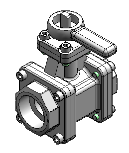
Choose the Inspect tab→Evaluate group→Check Interference command
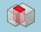
.Click Interference Options.
On the Options tab, set the options as shown and click OK.
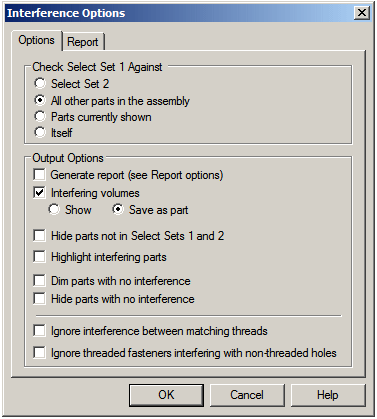
For select set 1, select the subassembly handle and ball.asm in PathFinder. Accept the selection.
Click Process.
A new part is placed at the bottom of the list in PathFinder. This part represents the volume of the interference. The interference is represented as a construction surface. Using the select tool on the Home tab, right-click the new part and ensure that the construction surfaces are displayed by selecting Show/Hide Component Construction surfaces.
Click the Select Tool, and then select the interference part to highlight the interference volume in the assembly window.
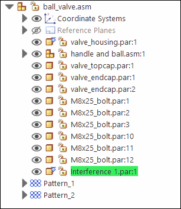
The highlighted interference is between the ball and the end caps. Modify the end cap to remove the interference.
Shade the assembly using the Visible and Hidden Edges command .
Press Ctrl+R on the keyboard to rotate the assembly to a right view. Use the Zoom Area command for a better view of the interference.
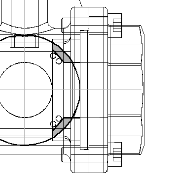
Measure the elements to help decide how to modify one of the parts.
Right-click Interference1.par in PathFinder and choose Show Only.
Choose the Inspect tab→3D Measure group→Inquire Element command
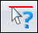
. Set the type to Surfaces Only.Select the outside radius of the ball.
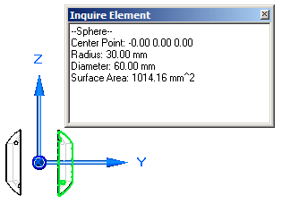
Notice the radius is 30 mm. Remember this value when the end cap is modified. Close the Inquire Element dialog box.
Right-click valve_endcap.par:2 in PathFinder and choose Show.
Choose the Inspect tab→3D Measure group→Measure Distance command. Using keypoints, measure from the radius of the ball to the midpoint on the mating surface of the end cap. To select the center of the sphere, select the circular edge shown, then select the face of the end cap shown.
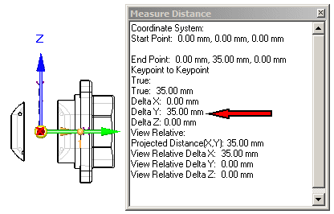
Notice the distance value is 35 mm. Remember this value when editing the end cap. Close the Measure Distance dialog box.
Choose the Select Tool command, right-click the right end cap named valve_endcap.par:2 in PathFinder, and then click Edit.
Press Ctrl+I on the keyboard to return to the isometric view.
Choose the View tab→Show group→Hide Previous Level command  .
.
At the bottom of the list in feature PathFinder, select the revolved protrusion.
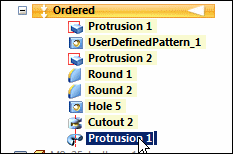
On the context toolbar, click the Dynamic Edit button
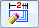
.Select the 40 mm dimension on the profile, and change it to 35 mm.
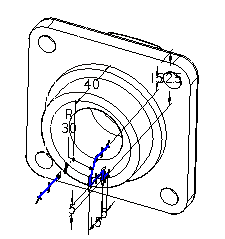
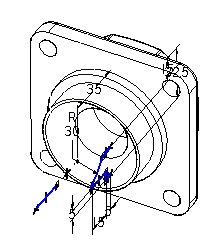
On the Home tab, click Close and Return .
Display all the parts in the assembly.
Click the Select Tool command, and in Assembly PathFinder highlight the interference part. Press the Delete key.
Run the interference checking against the handle subassembly and all other parts. No interference should be found.
Save the file.
Now that there is no interference between the ball and the housing, rotate the handle to a new position. Unlock the axial relationship locking the rotation, and then reposition the handle.
In Assembly PathFinder, select the handle and ball.asm subassembly.
In the bottom pane of Assembly PathFinder, click the Axial Align relationship.
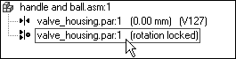
On the command bar, click Unlock Rotation
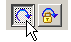
. Notice that the fixed offset used by the original insert relationship is gone.Click Edit Definition
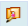
.On the command bar, set the relationship type to the Angle relationship .
Click the Options button .
Make sure the Reduced Steps option is cleared.
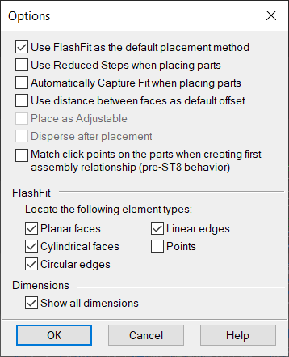
Using QuickPick, select valve_shaft.par:1.
If you have trouble picking valve_shaft.par:1 it may not be active in the subassembly. Use the Activate button on the command bar.
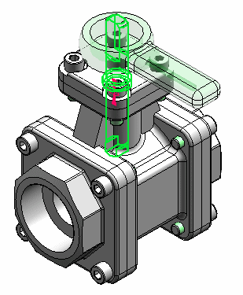
Select the left planar side of the shaft.
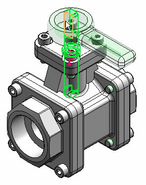
Select the main housing.
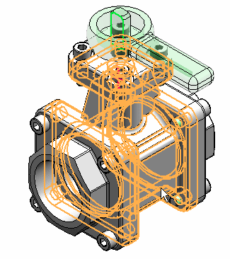
Select the left side of the housing.
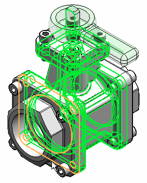
Type 45° for the rotation angle.
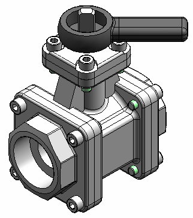
Select the top face of the valve as the plane where the angle is measured.
Change the angle value and watch the handle and ball subassembly rotate.
Save and close the file. This completes the activity.
In this activity you learned how to check for interference between parts and subassemblies. You learned how to determine the extent of the interference and make the modifications necessary to correct the interference.
-
Click the Close button in the upper-right corner of this activity window.
Answer the following questions:
-
After selecting a set of assembly components to check for interference, what options are available to perform the interference detection?
-
After the interference is detected, what options exist for analyzing the interference?
-
After selecting a set of assembly components to check for interference, what options are available to perform the interference detection?
The options are:
-
Select set 2
-
All other parts in the assembly
-
Parts currently shown
-
Itself
-
-
After the interference is detected, what options exist for analyzing the interference?
The options are:
-
Generate Report
-
Create interfering volumes and show them or save them as a part.
-
Hide parts not in the select sets
-
Highlight interfering parts
-
Dim parts with no interference
-
Hide parts with no interference
-
Ignore interference between matching threads
-
Ignore threaded fasteners interfering with non-threaded holes
-